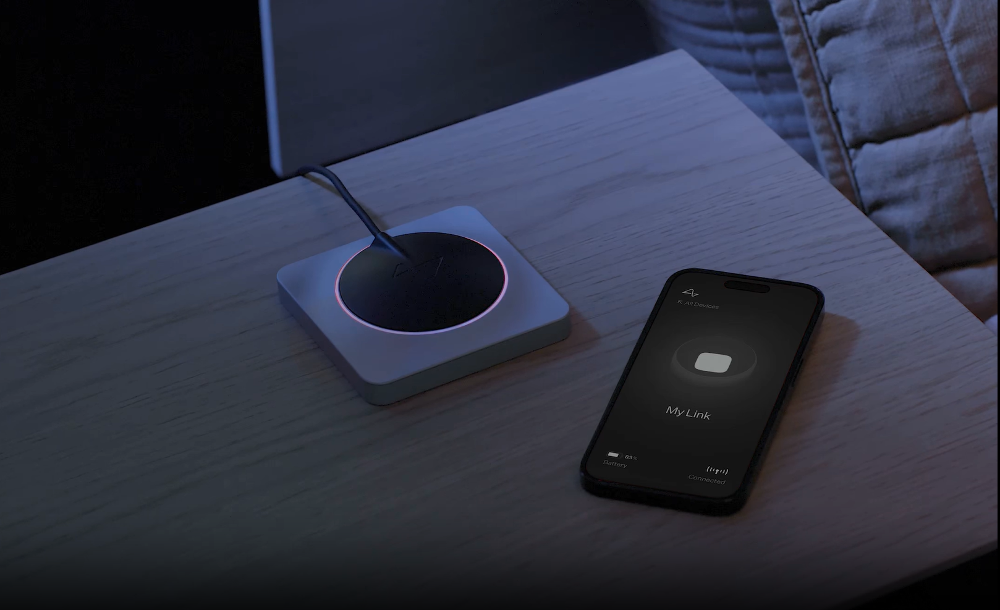

Create a generalized brain interface to restore autonomy to those with unmet medical needs today and unlock human potential tomorrow.

Brain-computer interfaces have the potential to change lives for the better. We want to bring this technology from the lab into peoples' homes.
To restore independence and improve lives, we’ve built a brain-computer interface (BCI) experience that enables fast and reliable computer control and prioritizes ease of use.
Shape the Future of Assistive Technology with Neuralink
The Science Behind Elon Musk’s Neuralink Brain Chip